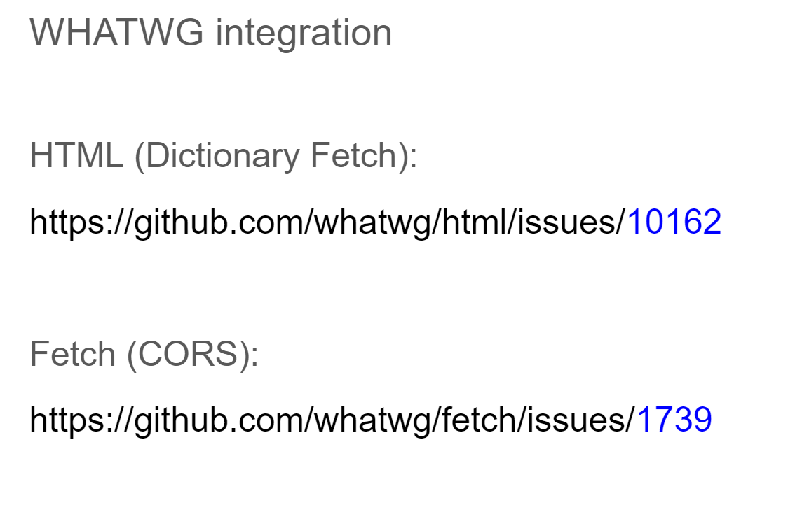
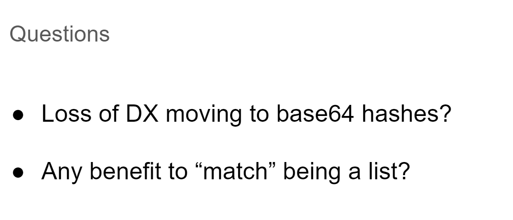

Participants
- Nic Jansma, Andy Davies, Barry Pollard, Dan Shappir, Noam Helfman, Noam Rosenthal, Patrick Meenan, Sean Feng, Tariq Fafique, Yoav Weiss, Andy Luhrs, Michal Mocny, Ian Clelland, Alex Christensen, Sia Karamalegos, Aoyuan Zuo
Admin
- March 14 at 1pm EST / 10am PST
Minutes
Recording
- Pat: Compression dictionary transport uses HTTP responses for compression dictionary for bz, zstd
- ... Main trigger is Use-As-Dictionary response header, with match pattern
- ... Most of these should look similar to last time, but there are some tweaks
- height: 776.00px; margin-left: 0.00px; margin-top: 0.00px; transform: rotate(0.00rad) translateZ(0px); -webkit-transform: rotate(0.00rad) translateZ(0px);" title="">
- ... Can trigger fetch of a standalone dictionary
- ... Use case in static case, using a static dictionary for site-wide JavaScript
- ... Seeing pretty good savings when individual JavaScript resources get fetched
- ... Spin between dynamic and static cases
- ... Browser when it has a match for available dictionary on request, adversities Available-Dictionary header with hash
- ... If server agrees and has matching dictionary, respond with Content-Dictionary header and Content-Encoding
- ... Browser treats as normal response at that point, smaller
- height: 600.00px; margin-left: 0.00px; margin-top: 0.00px; transform: rotate(0.00rad) translateZ(0px); -webkit-transform: rotate(0.00rad) translateZ(0px);" title="">
- ... Chrome 123 hsa a new Origin Trial CompressionDictionaryTransportV2
- ... Need new tokens
- ... Spec changed slightly so it's not quite compatible
- ... IETF draft 03 which has current changes, and is being discussed IETF in March
- ... Hopefully we're done with most of bike-shedding, minor tweaks going forward
-  height: 732.00px; margin-left: 0.00px; margin-top: 0.00px; transform: rotate(0.00rad) translateZ(0px); -webkit-transform: rotate(0.00rad) translateZ(0px);" title="">
- ... Open issues with WHATWG for HTML and Fetch, plan is to open PRs on specs themselves
- height: 795.00px; margin-left: 0.00px; margin-top: 0.00px; transform: rotate(0.00rad) translateZ(0px); -webkit-transform: rotate(0.00rad) translateZ(0px);" title="">
- ... Changes
- ... Sec-Available-Dictionary is now Available-Dictionary, no Sec-
- ... "sbr" is now "br-d" to match "zstd-d"
- ... When server uses Content-Dictionary for resource, it has to add the header and hash of dictionary used in response as well as Content-Encoding. Previously C-E implied it was used, more specific
- ... Controversial: Dictionary hashes, in Content-Dictionary and one Available-Dictionary, used to be a hex string, now a structured field byte-string
- ... :base64: encoded string of the hash
- ... "ttl" was removed, had lifetime independent of cached response lifetime. Removed in favor of using cache lifetime of response plus any stale-while-revalidate
- ... "match" was a wildcard expression thing, now it's a URLPattern (same-origin as resource being used)
- ... "match-dest" is added to Use-As-Dictionary header. e.g. site-wide dictionary being used and you don't want it sent for images
- ... "id" opaque to clients, echo'd back in future requests as "Dictionary-ID" if you index as something other than hash, you can use your own ID of dictionary being used
-  height: 535.00px; margin-left: 0.00px; margin-top: 0.00px; transform: rotate(0.00rad) translateZ(0px); -webkit-transform: rotate(0.00rad) translateZ(0px);" title="">
- ... Discussion: Sad in move from hex strings to base64 encoded hashes
- ... Hex strings are what hashing spit out, makes it easy to map from Request Header to file system
- ... Generally you want to do some processing to request header anyway, e.g. to make sure it's valid. Maybe overblowing DX challenges?
- .... Any benefit to "match" being a list of patterns instead of just a string. Set of resources but also to be used for itself? Use v1 for compression of dictionary v2? Does that add complexity unnecessarily
- Yoav: Base64 hashes change I'm not worried about developer experience as about deployability.
- ... Seems like with hex string, you can have very simple URL rewriting rules, where here you need to do extra processing to convert Base64 into filesystem-safe
- ... But maybe we shouldn't do simple URL rewriting here?
- ... My first reaction was this is really bad, did some research, I think it's now slightly less bad now
- ... A lot of the places where you can do a URL rewrite you can do a RegEx, do required conversions for you
- Noam: You can create replace rules that uses RegEx
- ... I wonder how hard it's going to be, hex string was easy to use
- ... Base64 string is just a string, appended to URL it can have slashes
- ... Play with regexes and some escaped-valid tokens
- Pat: Build system needs the same changes
- Noam: Agrees it complicates things. Security concern?
- Pat: Cleanliness, since it's binary should use that type. Smaller but not significantly so.
- Nic: Can someone share an example of this format
- height: 160.00px; margin-left: 0.00px; margin-top: 0.00px; transform: rotate(0.00rad) translateZ(0px); -webkit-transform: rotate(0.00rad) translateZ(0px);" title="">
- Yoav: Interesting for OT participants to document how this works
- ... Do they have to throw away old tech stacks to make this work
- ... Main motivation here is technical purity
- ... Maybe correct solution for this, HTTP WG territory, maybe they can define something file-system compliant
- Noam: URL compliant, maybe not just filesystem compliant
- Ian: We have this already in RFC that defines Base64, special encoding for file-system safe
- Yoav: Exists in Base64 RFC but not in structured field definitions
- ... Maybe they should add as a type
- Pat: I know at least one OT participant keeps everything as hex strings and doing transformation on header as it arrives
- Noam: Suggest simplicity
- Pat: Want to discuss in person at IETF
- ... Any strong opinions on "match", a single pattern vs. a list?
- Yoav: Interesting to have a list, I don't know how much complexity it adds on the client side?
- ... Have a single large script also cover a bunch of smaller ones that you want to deliver at the same time
- ... Allow them to override with a more specific match?
- Pat: Match specificity is the problem
- Yoav: How does it match with multiple URLs in URL patterns?
- Pat: Length of string of URL pattern defines the most specific match
- ... Still work even with the list
- Yoav: Something to explore as part of OT
- ... People need to be deliberate about exploiting list element
- Pat: We could in theory have match be both a string and a list
- ... They're easy to tell apart as structured fields go
- ... Can always add a list later
- Yoav: Main cost of being a list right away is client-side implementation
- Pat: I don't think client-side implementation is that big of a deal
- ... Needs a loop over dictionaries, instead of just a single item
- Yoav: When storing the dictionary you'd have to map a single dictionary to multiple potential paths
- Pat: As it stands, we need to pull all dictionaries for a given origin and iterate anyway since they're URL patterns, so we have to check all anyway
- ... No way to fast-match a hash map of URL patterns
- Yoav: We're going to have a linear match time
- Pat: Yes, based on the number of dictionaries published on a document origin
- Yoav: Sub-optimal
- Pat: Match-dest could be helpful here
- ... You could truncate by beginning parts of a URL pattern or not
- Yoav: Worried about that it's a common pattern to use infinitely cache-able resources
- Pat: Won't want to do that anyway because of cache varies, because we're using resource cache time as expiry time
- ... You'll want to scope it as longer than normal release cycle but not infinite
- Pat: A 3 day release cycle may suggest a 1 week cache lifetime, not a 1 year lifetime
- ... Otherwise you'll get a long list of Available Dictionaries
- ... Delicate balance
- Yoav: So why did we remove ttl?
- Pat: What's the benefit of having an infinite expiration for something only used for 3 days as well?
- Yoav: Not worrying about
- Pat: If you have to worry about a TTL anyway, changing expiration of resource is sensible
- ... Need to be aware of and going to be a mind shift
- Barry: If you don't support multiple matches, what if you send it and a CDN sends again
- ... Error case?
- Pat: Multiple Use-As-Dictionary responses structured response could be confusing
- ... Recommend against having more than one Use-As-Dictionary response
- Barry: In spec you say client can only send one Available-Dictionary, could say server only sends one Use-As-Dictionary
- Nic: Similar challenge with Accept-CH header coming from edge + origin etc, agreed to avoid the confusion
- Yoav: Playing around with them a bit on the developer side of things
- ... One thing I noticed is that bundles tend to change semantics over time, and change names as a result of that
- ... Compression dictionaries have a huge benefit, but may need a change in mindset on how bundles are generated, providing stable name patterns
- ... Dictionary may not match anything you see in the future
- Noam: Wanted to comment same thing
- ... Referring when JS bundle sent to minification and gets renamed?
- Yoav: Not minification, I saw stable minification.
- ... I saw on the same site, bundles had same modules 4 days apart, some bundles changed modules between them because dependencies changed, so bundles had different name pattern
- ... Dictionary from 4 days ago didn't match the bundle you served today. Internal structure changed which resulted in a name change.
- ... For a demo I hacked things together, but in practice I wrapped together a different bundling algorithm to keep name the same even if dependencies change
- Noam: I'm talking about minification renaming variables between versions
- ... e.g. Closure two versions had a brotli diff of 40% of original size
- ... I did modify Closure compiler to accept renaming maps, you can go to ~90% reduction in size in our case
- ... Issued a PR on Closure compiler https://github.com/google/closure-compiler/pull/4155
- Noam: Do we have data on timing of ???
- Pat: Not that we've measured or seen, clients that have run it have sene perf gains
- ... Applying diff vs. just BR encoding full resource, is there a delta?
- ... On Chrome side of things we do a fair bit of work to pre-warm dictionary while we're waiting on the response, we don't load it, but it should be in better shape
- ... Depending on what resource type and encoding it should stream as well and not require processing on whole resource at once
- ... Good point on streaming, if you have a very large dictionary and a large streaming response, does it need to load Dict first before it can decode first bits of HTML for example
- Noam: If it's 10% of original target, and compressed target is like 800KB it's negligible, but if it goes to high % of ratios, it becomes more significant in overall time. Still a win.
- Pat: Interesting to test Br vs Zstd
- Yoav: I'd be cautious about comparing CLI as reading from disk is involved, where browser implementation when the browser advertises an available dictionary it's already read it from cache
- Pat: Don't necessarily always want to load it if the server's not going to use the dictionary
- Noam: Maybe a way to advertise to the browser that we are interested? Browser should pre-warm?
- Pat: I'd leave that to browser heuristics for now. Dictionaries are only used on repeat visits anyway. Browser can learn how often origin uses dictionaries.
- Yoav: RUM providers would like to know for deployments of Compression Dictionaries whether they're effective in the wild
- ... Be able to compare them
- ... Without knowing actual Content-Encoding they can speculate, but don't know definitively they're applied
- ... Good to have visibility into Content-Encoding itself
- ... Doesn't seem to expose any extra details beyond what we already expose in the past around Content-Type
- Pat: The questions were more specs and privacy reviews, Content-Type hasn't launched yet? Implemented by Summer of Code programmer, but hasn't made it out of that launch
- ... Want to get on the same path, but want to make sure standards work is far along
- ... Have any privacy/security people looked at it beyond us?
- Yoav: IIRC Content-Type was restricted to same-origin or CORS responses, which matches same restrictions for shared dictionaries anyways
- Noam: Another thing with Content-Type it had to be an enum/known list of values? Same case for Content-Encoding?
- ... Avoid side-channel of data?
- Pat: 5 known values, registry for the types
- ... If you used an invalid Content-Encoding you'd break the response
- Yoav: Content-Type is in the spec, landed in Fetch and RT exposes that
- ... Would guess we want to something similar for Content-Encoding
- ... Shipping in Chromium, I don't remember the status
- Ian: For Content-Type a CL was merged and reverted, but we didn't re-land that
- Yoav: There was a Intent to Ship that got 3 LGTM, April 2023
- Pat: I think horo had seen the code, it's just behind a flag not enabled by default
- Yoav: Flag to flip it on wasn't enabled, but intent was approved
- Noam: I'd like to clean up shop before we add more. Is this the only?
- Yoav: There's also HTTP method
- Noam: Someone with high motivation needs to add it
- ... Things require commitment and maintenance
- Pat: The Chrome Net(?) team is willing to take on adding Content-Encoding and finishing spec work for it as well
- Yoav: Spec work is similar to Content-Type PR, same with different values
- Noam: Find a place in Fetch where you read it and apply it
- ... And to figure out what Service Workers should do
- ... Since we already have encodedBodySize and decodedBodySize this works in the same space
- Nic: I think it'll help w/ RUM and deployments of Compression Dictionaries
- Barry: Was doing testing of Early Hints
- ... You send a request, get 103, get response back
- ... If there is no 103 response, what should firstInterimResposnse be? Right now it's 0
- ... I expected firstInterimResponse start to be the same as responseStart or requestStart
- ... Saying it's 0 before request has been sent surprises me
- ... The advantage is that it explicitly notes was no Early Hint
- ... Surprises me it doesn't fit into timeline where it should
- ... If you have no domainLookupStart and domainLookupEnd, are they 0 or are they set
- Noam: secureTransportStart returns 0 if not on HTTPS
- height: 229.75px; margin-left: 0.00px; margin-top: 0.00px; transform: rotate(0.00rad) translateZ(0px); -webkit-transform: rotate(0.00rad) translateZ(0px);" title="">
- Noam: workerStart, redirectStart etc return 0 if there is no X happening
- Barry: Not saying it's wrong, just surprised
- Sia: null, nil, or undefined? It's unclear
- Yoav: If there is no duration, it's 0. We don't have an opt-null value in PerformanceTimeline
- ... In terms of compat if we returned -1s or another value, or nullify, that will probably break content out there
- Barry: My concern was more firstInterimResponse is the same as the full body response or responseStart
- Yoav: domain lookup behaves the way you want this to behave
- Noam: There's always a domain lookup, it just doesn't get cached, different in that way
- ... ResourceTiming was built in patchwork over the years has a bit of a DSL inside the numbers
- ... Time and logic together
- ... For consistency it's OK to keep it as 0 for now
- ... Other things I'd fix before this
- ... e.g. requestStart in ServiceWorkers
- Andy: From practical view 0 isn't a problem it's durations 0 of timing
- Nic: We were planning on using 0 as an indicator that Hints were used or not.